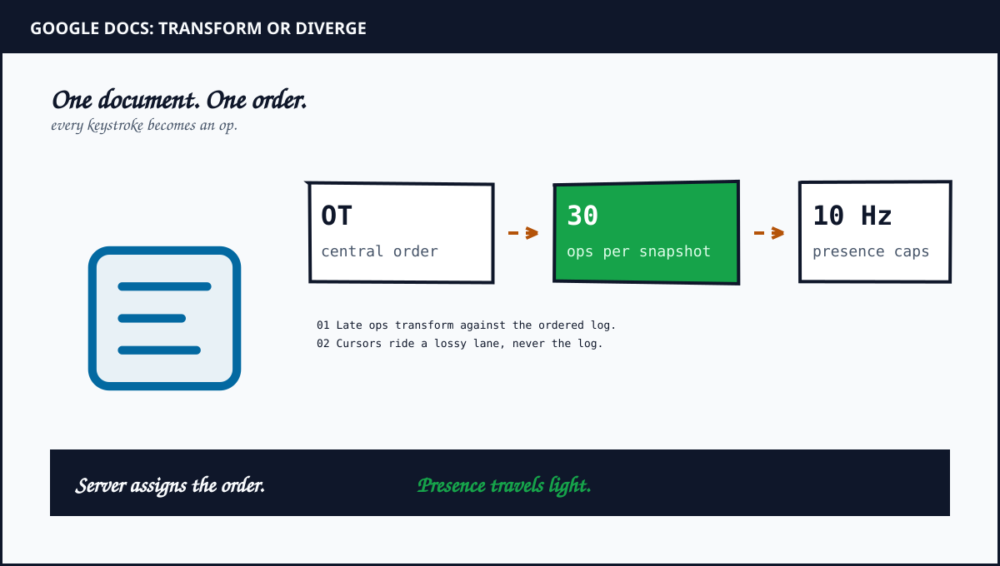
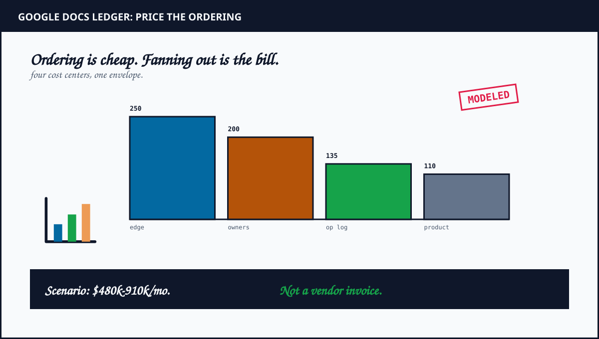

1. The Moment Typing Became A Distributed System
Most products can queue writes politely. A word processor cannot. When a lawyer types a comma, the comma must appear now, not after consensus across three zones. When a second lawyer deletes the same sentence, both screens must converge without a merge dialog. When the train tunnel eats the network, the offline paragraphs must rejoin the document without duplicating the exhibit list.
Docs is therefore an ordering system wearing a toolbar. Clients hold a local copy plus apply edits instantly. Every edit becomes a small op: insert text at a position plus delete a range plus retain formatting across a span. Ops travel over a persistent connection to the owner process for that document. The owner assigns a revision number plus broadcasts the accepted op to every witness.
The hard question is positional drift. An op authored against revision 41 may arrive after revision 44 has committed three inserts before its target index. Applied literally, the op lands in the wrong paragraph. Operational Transformation rewrites the late op so its intent survives the new history. That rewrite is the whole product.
2. Why Docs Beats Another Chat Clone As An Autopsy
Chat systems route blobs plus delete them after delivery. Docs must preserve intent plus history plus undo across years of edits from strangers sharing one paragraph. The constraints are stricter so the lessons travel further.
The paper trail helps. Google shipped Wave in 2009 on OT plus retired the product while keeping the engine. The Jupiter system formalized the client revision model. The Drive team then published a three-part collaboration series describing optimistic clients plus server ordering plus revision logs. Few realtime products document their conflict core this openly.
The contrast with Figma sharpens the lesson. Figma multiplayer chose server-authoritative property resolution for spatial objects where last-writer-wins stays legible. Docs edits prose where character interleaving must preserve both authors. Same realtime family. Opposite conflict math. The bill hides in the boundary between the two choices.
3. The Architecture: One Document Plus One Owner Plus Many Witnesses
Open a document plus your browser downloads a snapshot plus opens a persistent connection. A routing layer pins every connection for that document to its owner process using consistent hashing on the document identifier. Two unrelated documents never share an ordering lock. One overloaded thesis cannot stall a stranger boarding pass.
The owner holds live state plus the revision counter. Edge gateways terminate sockets plus authenticate plus forward. Product data such as permissions plus comments plus Drive metadata lives outside the OT path in transactional stores plus a search index. That split keeps a slow comment thread from freezing keystrokes.
Durability sits behind speed. The owner appends every accepted op to an append-only revision log before broadcast fans out. Periodic snapshots capture full state roughly every 30 ops in this scenario. Recovery loads the newest snapshot plus replays only the tail. History plus undo plus offline catch-up all ride the same log.
4. The Transform Core: How Two Edits Stop Erasing Each Other
Consider the canonical collision. Ana inserts X at position 5 against revision 41. Ben deletes the character at position 3 against the same revision. The server commits Ana first as revision 42. Ben op arrives late. Applied literally, Ben deletion points at the wrong character because Ana insert shifted every index after position 5.
The transform function repairs it. Transform takes two ops authored against one base state plus returns adjusted forms that compose in either order while preserving intent. Ben delete at 3 stays valid. A later insert authored at 5 after a prior delete at 3 shifts left by one. Overlapping deletes collapse to a no-op for the already removed range. Inserts at the same index tie-break deterministically by author plus session order so every replica picks the same winner.
Jupiter discipline makes this tractable. Each client tracks its last synced revision plus a buffer of sent-but-unacked ops plus a buffer of unsent local edits. The server transforms each arrival against every commit since the sender last revision. Clients transform pending buffers against each broadcast. Periodic text checksums force a resync when a replica drifts. Central order plus linear history plus checksums. That trio carries the correctness load.
5. The Transform Matrix: Which Op Pairs Actually Collide
Transform looks like one function. In production it is a matrix of op-pair cases, plus the matrix is where convergence bugs hide. Plain text pairs are the easy rows. Rich pairs carry the risk.
Walk the common rows. insert against insert at one index: both survive in a deterministic order fixed by author plus session tie-break, so every replica picks the same winner. insert against delete: the insert index shifts past the removed range. delete against delete: overlap collapses plus the second op shrinks to the surviving range or becomes a no-op when its target already vanished. Formatting span against delete: the span shrinks to the surviving characters instead of dangling across removed text.
| Base text | Ana op | Ben op | Server order | Transformed late op | Converged text |
|---|---|---|---|---|---|
| Hello | insert X at 2 | delete at 0 | Ana then Ben | delete at 0 stands | eXllo |
| Hello | insert X at 2 | delete at 0 | Ben then Ana | insert 2 shifts to 1 | eXllo |
| ab | insert X at 1 | insert Y at 1 | either order | tie-break fixes one order | aXYb |
| abcd | delete 1 to 2 | delete 2 to 3 | either order | overlap shrinks to survivors | a |
The literature names the deeper properties TP1 plus TP2: pairwise convergence plus path independence across three or more concurrent ops. Proving both for rich text is genuinely hard, plus published OT algorithms have failed on specific interleavings in the past. The central linear history is the practical escape: the server reduces every many-way tangle to a sequence of pairwise transforms against one ordered log. Peer meshes face the full property. A pinned owner faces it one op at a time.
6. OT Against CRDT: Why Docs Kept The Server
CRDT designs remove the transform by giving every character a stable sortable identifier plus tombstoning deletes. Replicas merge in any order with no central rewrite. Libraries like Yjs plus Automerge prove the model daily. Notion leans on this family for offline-first block merging where peer convergence matters more than wire size.
Docs kept OT for three priced reasons. First, ops stay tiny: position plus payload versus identifier plus causal context per character. At billions of keystrokes, bytes become budget. Second, a server already exists for auth plus storage plus search, so central ordering costs nothing extra while removing an entire class of transform proof burden. Third, tombstones accumulate: heavily edited long-lived documents carry many times their visible size until garbage collection, a tax OT never pays.
The rule transfers cleanly. Central server plus rich text plus always-online adjudication favors OT. Decentralized plus offline-first plus peer merge favors CRDT. Figma picked a third shape because canvas objects tolerate property resolution while prose cannot. Choose by product invariant, never by conference fashion.
7. The RPS Model: How Much Traffic Does Typing Make
Google does not publish a per-keystroke histogram, so the following is a scenario with explicit assumptions. Assume 300 million monthly editors plus 8 million concurrent sessions at a busy peak. Assume each active session produces 30 ops per minute including typing bursts plus formatting plus suggestion threads. That yields 4 million durable ops per second before fan-out.
Presence dwarfs edits. Assume 8 million concurrent sessions each emit throttled cursor plus selection frames at 2 per second after client coalescing. That is 16 million ephemeral frames per second. Snapshot plus log writes add a smaller durable tail: one snapshot per 30 ops across 400 thousand hot documents produces roughly 130 thousand snapshot writes per minute plus log appends equal to op rate.
| Workload | Scenario | Result |
|---|---|---|
| Durable ops | 8M sessions at 30 ops per min | 4M ops per sec |
| Presence frames | 8M sessions at 2 per sec | 16M frames per sec |
| Fan-out deliveries | 3 witnesses per op average | 12M pushes per sec |
| Snapshot writes | 400k hot docs per 30 ops | 2.2k writes per sec |
Remodel these assumptions with your own session counts in the RPS envelope calculator. What follows uses the same boundaries as the Figma presence split: durable ops get ordering plus storage while presence gets speed plus loss.
8. What This Ordering Machine Might Cost
Cost the scenario as regional infrastructure: edge plus owner fleet plus log plus snapshot stores. Suppose 600 edge plus owner workers average 0.55 per hour after commitments plus connection proxies plus control services. Compute lands near 240 thousand per month. Add cross-zone transfer plus load balancing plus observability plus failover headroom: 180 thousand to 320 thousand per month.
Transform workers need memory for hot documents. Assume 400 thousand hot documents at 25 MB resident OT state plus buffers plus replica overhead. That is 10 TB logical before replication. With three-way replication plus spare pools, managed memory plus compute envelope lands near 140 thousand to 260 thousand per month.
The revision log plus snapshots plus product data complete the ledger. Assume 2 PB of op history with lifecycle trimming plus 800 TB of snapshots plus Drive metadata plus permissions plus search indexing. Storage plus transfer plus indexing envelope lands near 160 thousand to 330 thousand per month. Combined, the collaboration platform in this scenario lands near 480 thousand to 910 thousand per month, roughly 16 thousand to 30 thousand per day.
| Cost center | Modeled monthly range | What moves the number |
|---|---|---|
| Edge plus sockets | 180k to 320k | connections, regions, fan-out |
| OT owners plus transform | 140k to 260k | hot docs, buffers, replicas |
| Op log plus snapshots | 90k to 180k | history depth, cadence, reads |
| Product data plus search | 70k to 150k | permissions, comments, index |
| Total scenario | 480k to 910k | 16k to 30k per day |

Model snapshot storage against your own retention with the S3 storage cost calculator.
9. The One Million RPS Thought Experiment
Treat one million durable ops per second as a stress lens, not a Google disclosure. Assume each op carries 0.5 KB inbound plus 1 KB outbound plus three persisted copies across routing plus processing plus failover. The wire carries roughly 4.5M KB per second. Over a 30-day month, that is about 11.7 PB of logical movement before compression.
Take the unoptimized shape first: assume a fully loaded origin cost of 0.0000012 per op including transform plus log append plus fan-out. The math is 1,000,000 x 2,592,000 x 0.0000012 = 3.11M per month. This covers owners plus revision log plus cross-zone fan-out plus metrics plus spare headroom.
The proposed shape separates lanes. Coalesce typing bursts at the client plus route presence through a lossy relay plus serve reads from snapshots plus edge caches plus send only canonical ops to the owner. If origin traffic falls to 40 percent at 0.0000008 per op, origin work is 400,000 x 2,592,000 x 0.0000008 = 829k per month. Add 260k for relays plus caches plus observability plus headroom. The proposed envelope totals near 1.09M per month, about 65 percent below the unoptimized shape.
10. How I Would Cut The Bill Without Losing Convergence
1. Treat presence as disposable. Cursors plus selections plus viewport hints ride a best-effort relay with 10 Hz caps plus coalescing plus no persistence. Never append a cursor to the revision log. A dropped cursor is invisible. A journaled cursor is a storage annuity.
2. Pin documents near their dominant editors. One owner per document simplifies order but punishes intercontinental sessions when the owner sits on the wrong ocean. Place owners near the heaviest editor cluster plus proxy the rest. Migrate only when measured round-trip savings beat handoff complexity.
3. Coalesce bursts before they become history. Typing arrives in bursts. Merge intra-word keystrokes within short windows into compact ops before transform plus persistence. Keep semantic undo granularity while refusing to immortalize every inter-key interval.
4. Tune snapshot cadence by edit velocity. Hot documents earn frequent snapshots to bound replay. Cold documents keep sparse snapshots plus deep logs. Snapshot policy should follow measured ops per minute, never a global constant inherited from a calmer era.
5. Isolate hot documents automatically. One viral planning doc with hundreds of witnesses must never share an owner with thousands of quiet memos. Detect queue depth plus transform latency plus broadcast backlog. Route outliers to isolated owners without human triage.
6. Buy commitments for the floor plus spot for the broom. Owners plus edge plus log writes are the floor. Reindexing plus export rendering plus historical compaction are the broom. Commit to the floor. Interrupt the broom. A compaction that cannot survive preemption is a hostage note, not a job.
7. Verify convergence with checksums, not hope. Clients send cheap text hashes with revision markers. The server compares plus forces resync on mismatch. Transform code stays small plus honest because an independent check watches every merge.
11. Failure Modes: What Breaks Plus How The Log Saves You
Ordering machines fail in specific ways. Each row below names the blast radius first plus the recovery path second, because the second decides whether the first matters.
| Failure | Blast radius | Recovery path |
|---|---|---|
| Owner process crashes | one document pauses | hash ring re-pins, rebuild snapshot plus tail, clients retry at new revision |
| Hot document overload | broadcast backlog grows | isolate the owner, shed presence first, never shed ops |
| Checksum mismatch | one replica diverges | force resync from the server copy at last agreed revision |
| Deep offline divergence | transform cost grows with gap | snapshot resync beyond a threshold instead of op-by-op replay |
| Presence storm | relay saturates | 10 Hz caps plus coalescing plus drop policy hold the line |
Notice the pattern. Every recovery reads from the same two artifacts: the newest snapshot plus the ordered tail. The log is not just durability. It is the failover plan, the audit trail plus the offline bridge in one structure. Systems that persist ops get all three. Systems that persist rendered state get none of them for free.
Review System Design Interview Bootcamp for the whiteboard version of this exact OT problem, then Event Streaming in Production for ordered fan-out plus replay discipline.
12. The Postmortem Verdict
Docs endures because it refuses to solve the general collaboration problem. It solves text with a central order plus tiny ops plus an honest log. No peer mesh. No universal CRDT. No journaled cursors. The constraints look narrow until a million people type at once, at which point narrow is the only shape that fits through the door.
Steal the owner rule first. One serializer per document keeps agreement off the hot path. Steal the lane split next. Ephemeral presence must never touch durable storage. Steal the snapshot discipline last. History is a product feature with a storage price, so price the cadence explicitly.
The canvas at Figma feels simple because a server settles property fights elsewhere. The page at Docs feels simple because a server rewrites late ops before witnesses see them. Different conflict math. Shared discipline: name the line between durable plus disposable in code, because production bills whatever you leave unnamed.
Everyone types at once because one process decides the order plus proves it with a log.
Frequently Asked Questions
How does Google Docs collaboration work?
Browser clients apply edits optimistically plus send small ops over a persistent connection to the owner process holding their document. The server orders ops authoritatively plus broadcasts transformed ops to every connected client.
Does Google Docs use OT or CRDT?
Google Docs uses Operational Transformation with a central server that assigns revision order. CRDT libraries like Yjs power newer tools such as Notion plus Linear where offline-first merging matters more.
Why did Docs keep OT instead of switching to CRDT?
OT keeps ops tiny plus needs no per-character metadata. A central owner already exists for ordering so the transform stays tractable while CRDT tombstones would tax every long-lived document.
How does Docs handle offline edits?
The client buffers ops against its last synced revision. On reconnect the server transforms queued ops against everything committed during the outage plus replays missed ops from the revision log.
Sources and Method
Protocol plus revision discipline above come from Google engineering posts plus the Wave plus Jupiter lineage. Yjs plus Automerge docs inform the CRDT comparison. Figma engineering posts inform the canvas contrast. RPS plus cost figures are modeled estimates, not Google disclosures. Prices move quarterly. Re-run every assumption against your own telemetry before budgeting.